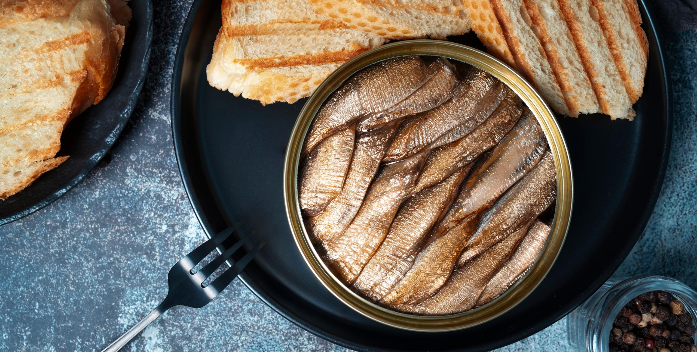
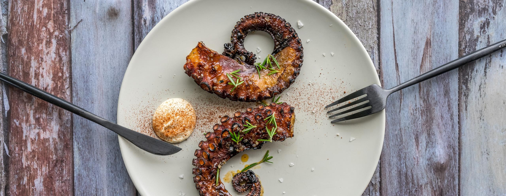
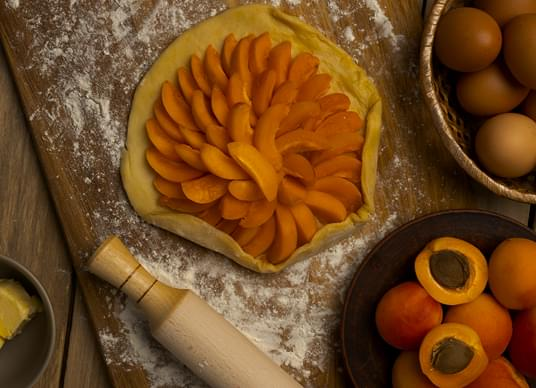
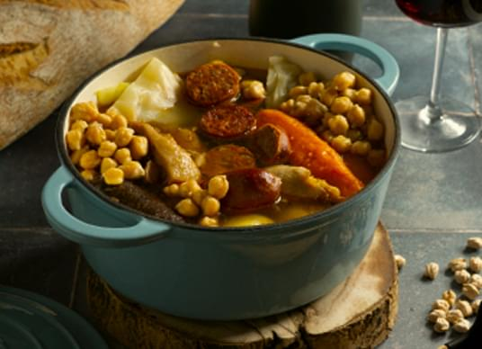
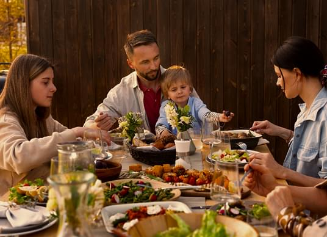

The story behind our seafood

A Legacy Born by the Sea
With over 800 kilometers of Atlantic coastline, Portugal has always lived in harmony with the ocean. The sea has been a source of life, culture, and identity for centuries — not only feeding generations but also shaping the way Portuguese people cook, celebrate, and connect. It is this profound relationship with the sea that defines much of our culinary heritage, and it’s at the heart of everything we serve in our restaurant.
The story of Portuguese seafood cuisine begins in coastal fishing villages, where traditions have been passed down through generations. Fishermen, guided by experience rather than instruments, would head out before dawn in wooden boats to bring in the daily catch — a ritual that continues to this day in many parts of the country. These communities learned to cook with what the sea offered, creating simple yet deeply flavorful dishes that let the ingredients shine.
Salted codfish (bacalhau), for example, became a national staple — not because it was caught locally, but because it could be preserved and transported inland, feeding families year-round. Meanwhile, along the coast, freshly grilled sardines, clams steamed with garlic and white wine, or octopus slow-cooked to perfect tenderness have remained timeless favorites.

Our Commitment to Freshness and Quality
At our restaurant, we honor this tradition by carefully sourcing the finest seafood available. We work with local suppliers and fishermen who understand the rhythms of the ocean and value sustainable harvesting. Each delivery is selected with care — whether it’s plump mussels from the coast, delicate clams, or firm white fish like dourada (gilt-head bream) and robalo (sea bass).
We believe great seafood needs very little to shine. That’s why our chefs focus on purity and balance. A drizzle of extra virgin olive oil, a sprinkle of sea salt, a handful of fresh herbs — these are often all that’s needed to elevate the natural flavors. Our menu changes with the seasons, following the availability of ingredients, just as families in coastal Portugal have done for generations.
Signature Dishes Inspired by the Ocean
One of our most cherished dishes is grilled sardines, served simply with roasted potatoes and seasonal salad. It’s a classic summer favorite, especially during the popular Festas de Lisboa, when the aroma of sardines fills the streets and people gather to celebrate with food, music, and wine.
Another favorite is octopus salad — tender pieces of octopus marinated in olive oil, red onion, parsley, and vinegar. Light, refreshing, and full of character, it captures the essence of Portuguese simplicity and elegance.
For those looking for something hearty, we offer arroz de marisco, a rich, comforting seafood rice dish that combines shrimp, mussels, clams, and sometimes lobster in a fragrant tomato and garlic broth. It’s soulful, warming, and deeply satisfying — a perfect reflection of coastal cooking.

Culinary Techniques with a Cultural Soul
Portuguese seafood cooking is not about complexity — it’s about respect. Respect for the ingredient, for the tradition, and for the people who came before us. Grilling over open flame, simmering slowly in clay pots, marinating overnight — these are techniques rooted in everyday life, passed on through stories and shared meals.
Even our choice of cookware matters: we often use cazuelas, rustic ceramic dishes that retain heat and lend a certain earthiness to the food. Our chefs are trained not only in technique, but in intuition — they cook with their senses, feeling when a fish is perfectly done or when a broth has the right depth.
Dining by the Sea — Even in the City
Even if you’re far from the waves, our goal is to bring the sea to your table. From the first bite to the last sip of wine, we want you to feel the soul of the coast — the breeze, the salt, the warmth. Our seafood dishes are not just meals, but stories, emotions, and memories served on a plate.
Pairing your dish with a crisp Vinho Verde or a bold Douro white wine completes the experience. These wines are specifically chosen to enhance the flavors of the sea — light, fresh, and balanced, just like the dishes themselves.
More Than Food — A Celebration of Portuguese Identity
At its core, our seafood menu is a celebration of Portuguese identity. It’s a tribute to the fishermen who brave the tides, the grandmothers who perfected family recipes, the small village markets, and the ocean that continues to nourish and inspire us.
When you dine with us, you’re not just enjoying a dish — you’re tasting history, tradition, and the soul of a country that lives through its food. From sea to table, this is our story — and we’re proud to share it with you.

You might also Like

Sweet Traditions:
Discovering Portuguese Desserts
Portuguese sweets are rich in flavor, history, and symbolism — each dessert tells a story from the past. From iconic pastéis de nata with their flaky crust and creamy custard to convent-born almond and egg yolk confections, these treats are more than indulgences — they’re cultural treasures. This article takes you on a delicious journey through Portugal’s sweetest traditions and the secrets behind their timeless charm.

The Heart of Portuguese Cuisine:
Tradition on Every Plate
Portuguese cuisine is a celebration of authenticity, simplicity, and heritage. In this article, we explore the roots of our most beloved dishes — from hearty stews to delicate seafood — and share how traditional flavors are preserved in every recipe we serve. Join us on a journey through culinary history, where every plate tells a story of generations, family gatherings, and local pride.

More Than a Meal:
The Culture of Portuguese Dining
In Portugal, food is more than just nourishment — it’s a way of life. Meals are moments to pause, connect, and celebrate with loved ones. In this article, we invite you to explore the warm, social spirit of Portuguese dining: long conversations over shared dishes, the importance of family recipes, and the joy of eating slowly, together. It’s not just about what’s on the plate, but the memories made around it.